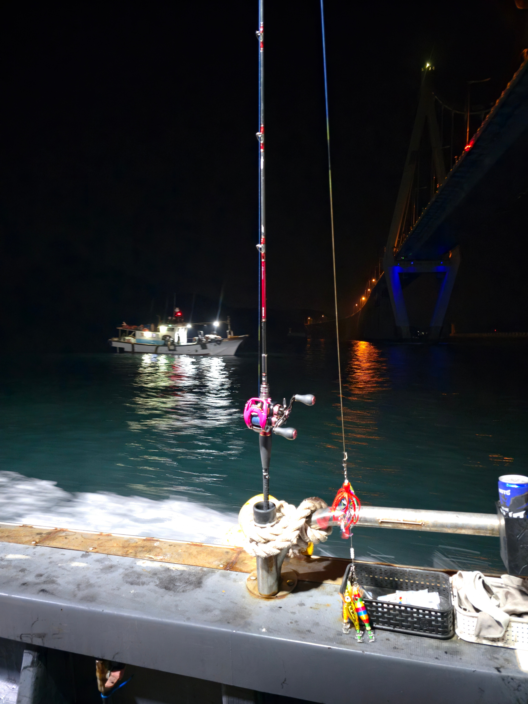
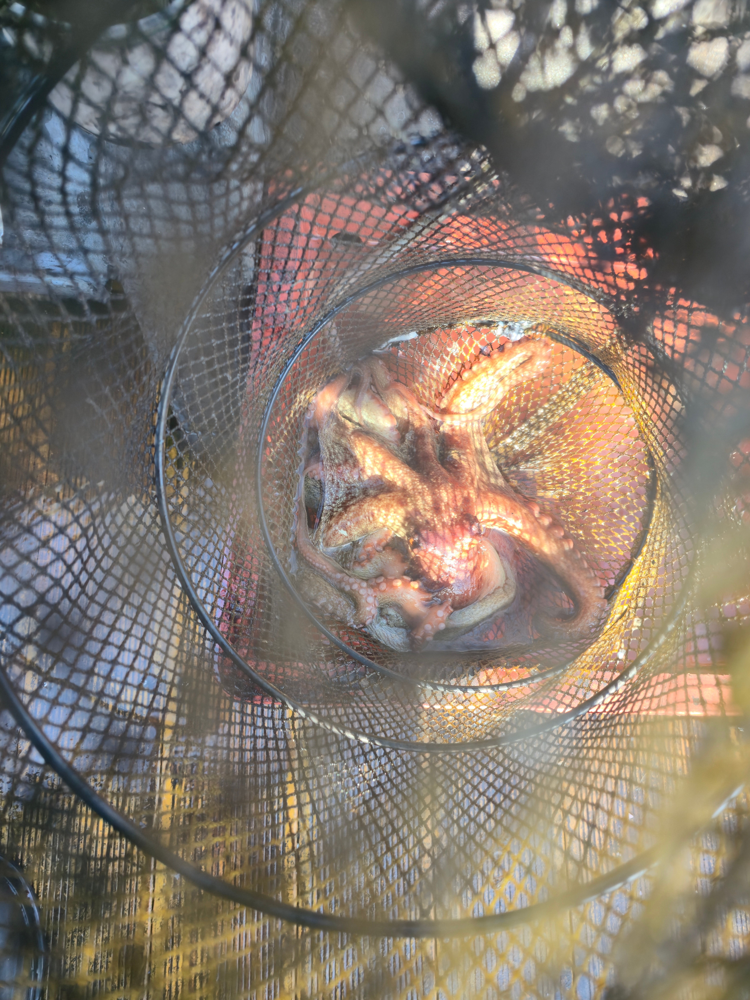
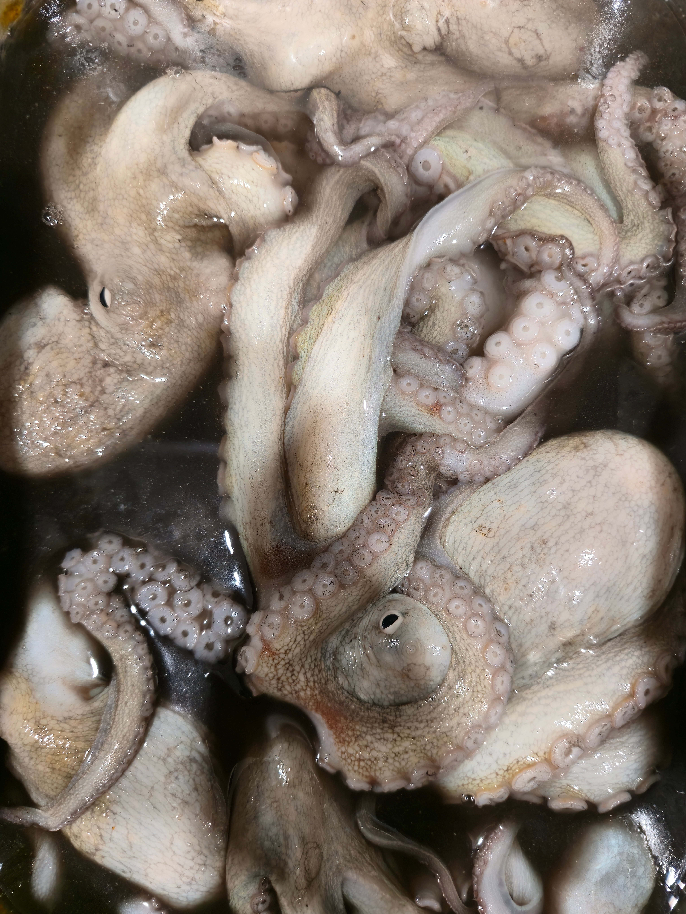
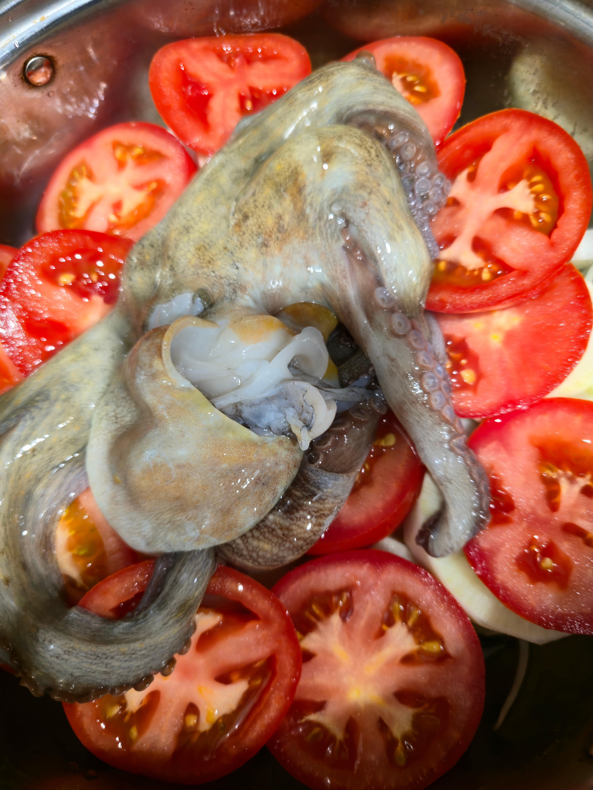
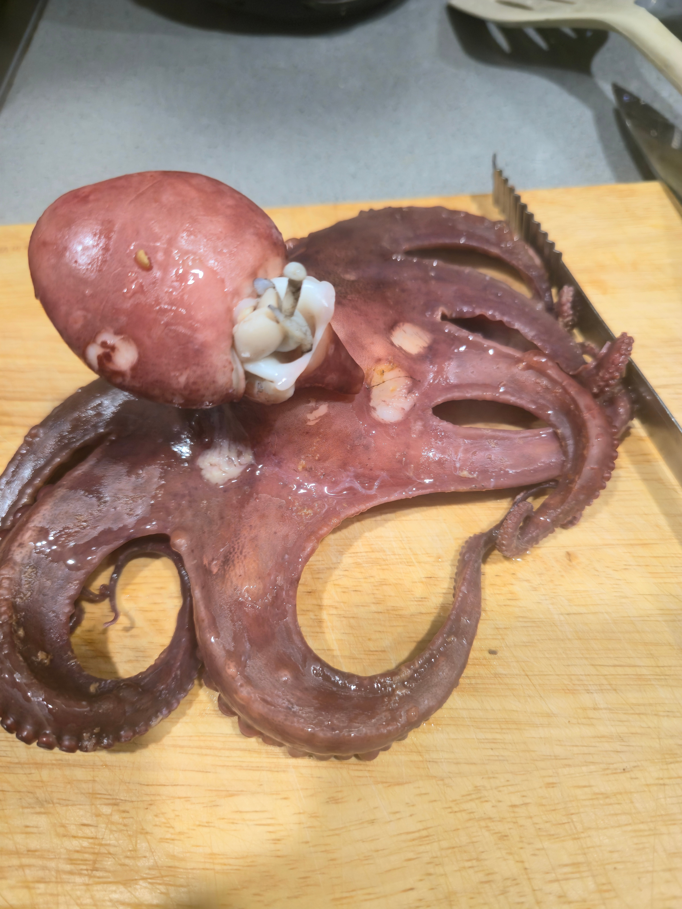

문어 잡으러 출동

수온 떨어져서 망한와중에 그래도 12마리 잡아서 선방..

오졌다리~~~

양파 무 토마토 순으로 깔고 위에 문어 올리고
약불로 40분정도 쪄줌

지중해식 문어찜 완성

문어 잡으러 출동

수온 떨어져서 망한와중에 그래도 12마리 잡아서 선방..

오졌다리~~~

양파 무 토마토 순으로 깔고 위에 문어 올리고
약불로 40분정도 쪄줌

지중해식 문어찜 완성
한입만 줘 화요사갈게
Xp로 사오셈
ㅅㅅ
문어라면은 안 먹냐
가끔 먹지
맛있겠다
양파랑 도마도 올리고 찌면 맛이 다른가요?
문어에 은은하게 양파랑 토마토맛나요
문어(피자맛)
토마토올려서 찌면 토마토에서 문어맛이 나서좋음? 아님 문어에서 토마토향이 나서 좋음?
문어맛토마토 vs 토마토맛문어
랑스타코에 조로릴?
다이와 메탈리아 에기타코
다이와 코우가 하이퍼 커스텀 tw
어익후. 진퉁이셨구나. 지금 신진도인데 몰황이네요.
오늘 조금이라 물안갈텐데 요즘 태안쪽 조황 멸망이네요
그래서 선장이 신나게 흘리는데 갑2쭈2 근데 선두권이라는 슬픈사실. ㅎㅎ 올해 끝났나벼요.
고흥 가십셔 갑사이즈 신발사이즈던데 어제 보니 전 14일 외연도 21일 고흥 갑니다
안나오는게 요즘 쌍끌이 다녀서 구래여
수온 갑자기 내려간것도 있고
저는 4일 8일 14일 18일 잡혀있는데 8 14는 취소하고 18일 유람이나 해야할랑가봐요
수온 체크하고 가세여 두족류는 수온 변화에 민감해여
그냥 녹동이나 갈껄
장비 좋네

문어하면 노포자지냄새밖에생각안나

꼴림
초장발사대 1티어
아씨 문어 어디서 잡냐고!!
뽈뽀 한번 해보셈 되게 쉬운데 존나맛있음
니가 한거처럼 40분이상 삶아서 엄청 부드럽게 해놓고
감자 적당히 크게 큐브로 잘라서 한번 찌고 마늘이랑 소금 발라놓고 올리브유 많이 뿌려서 감자를 튀기듯 굽고
감자 건져서 바닥에 깔고 데친문어 적당히 잘라서 소금이랑 '훈제파프리카가루' (만원인데 사셈) 뿌리고 아까 감자건진 팬에 적당히 지져서 아까 건져낸 감자위에올림.
올리브오일+파슬리+마늘+레몬즙 섞어서 문어위에 살살 뿌리고 먹으면 됨
아 이런거도 ㅈㄴ잘하는 사람이나 가서 잡아오지
나같은건 장비챙겨서 왓다갓다 기름값만 버림 ㅠㅠ
개붕이 정모
선상은 12마리나 잡냐 나 갑오징어 낚시할때 문어 겁나힘들게잡음 ㅠ 에기6호썼엉
그냥 숙회랑 저렇게 양파 토마토 넣고 찐 숙회랑 많이 달라? 몬가 더 야들해보이네
난 낼 완도로 문 쭈 간다
낼 무시 아니냐
완도 14물인데 낼 조금 근데 14물이 물이더 안가
내생각엔 메인 쭈가 더 많이 잡히고 문어는 세네개 잡으면 선방일듯 손님고기로 갑도 있으니 갑채비도 하고
완도가 문쭈갑 세종류 다 노릴수있어서 좋아
그리고 여수 고흥보다 바탕은 작지만 사람도 적어서 훨씬 낫다고 생각함
섹스네